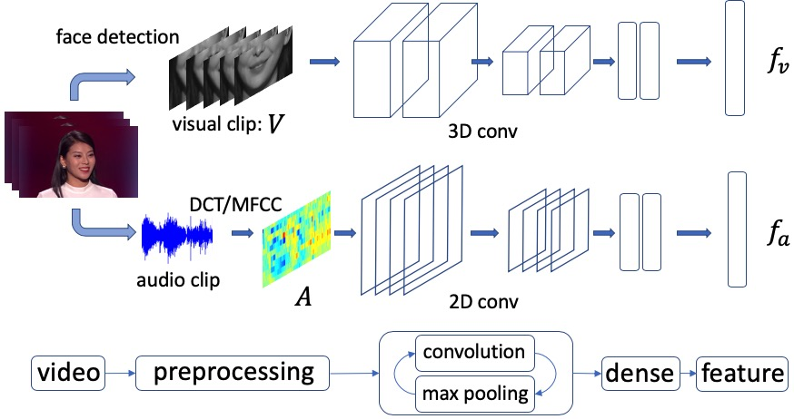
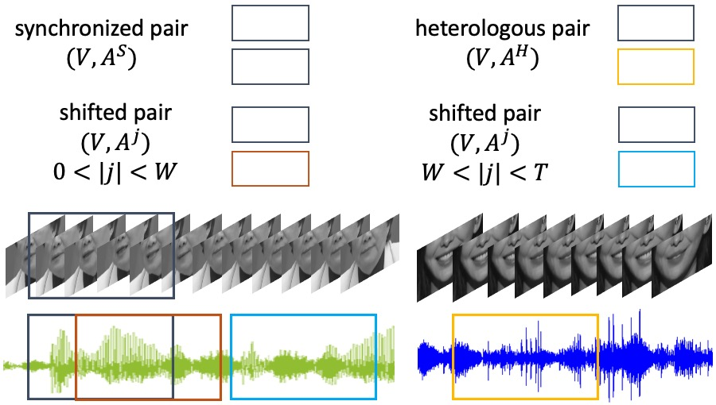

Network Architecture

Fig. 1. Two stream network architecture.
We process audio and video separately using a two-stream network, a common approach for multi-modal tasks. For the audio stream, the input is transformed with DCT (Discrete cosine transform) and MFCC(Mel Frequency Cepstral Coefficient) feature,i.e., a power spectrum of a sound on a non-linear mel scale of frequency. Then the MFCC is sent to a 2D convolutional network to produce speech features. For the video stream, a 3D convolution module is employed to extract both temporal information between consecutive video frames and spatial information in each video frame.
|
Training Examples

Fig. 2. Examples of audio-video synchronized, shifted, and heterologous pairs. W denotes the length of visual clip. T is the shifting range.
We consider three types of training samples in our experiments: the synchronized pair (positive) in which the audio and video are synchronized, the shifted pair (negative) with different shifting range, in which the audio and video are from the same source but different time clip, the heterologous pair (negative) in which the audio and video are from different sources.
|